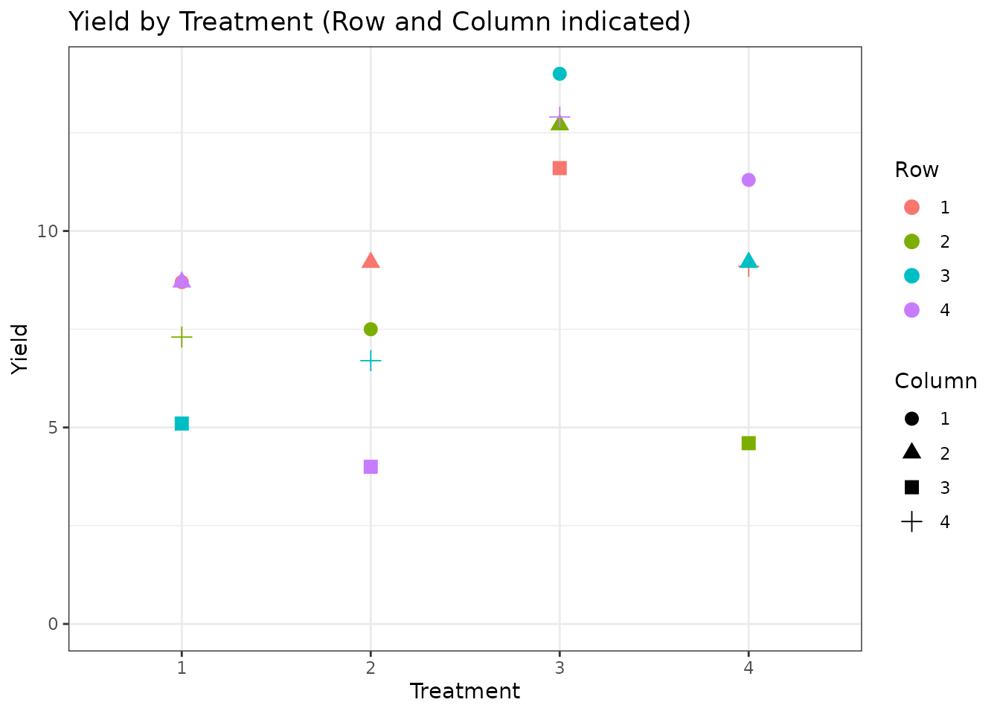
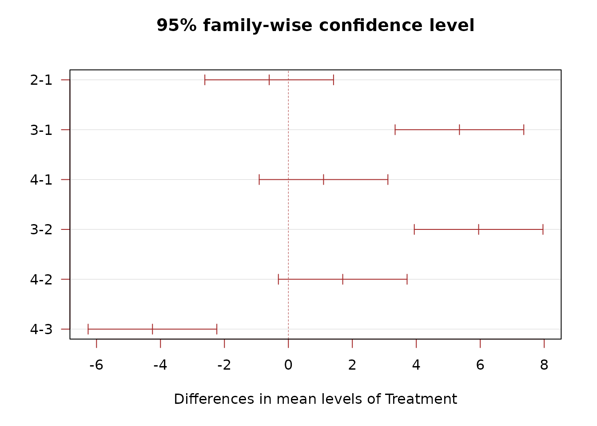
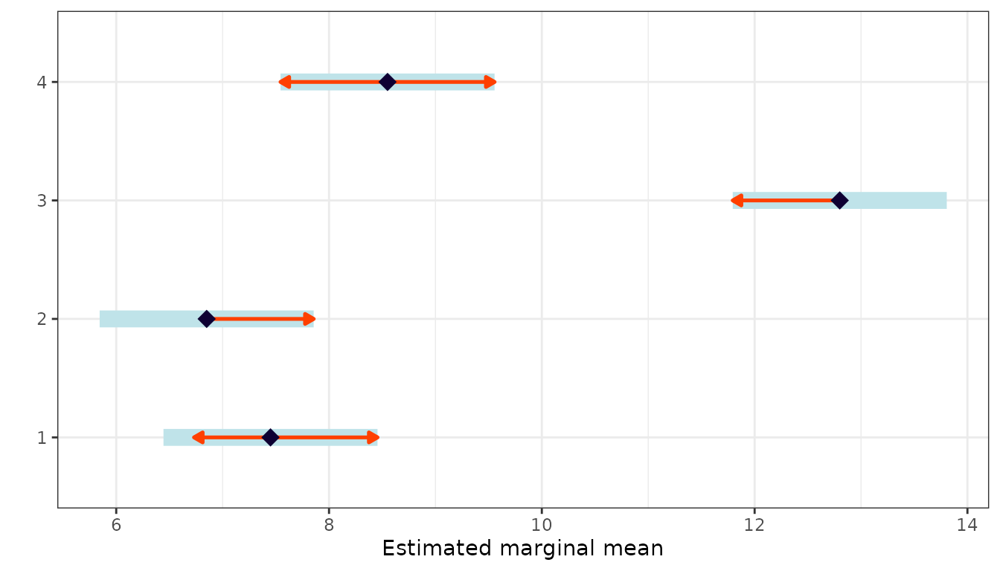
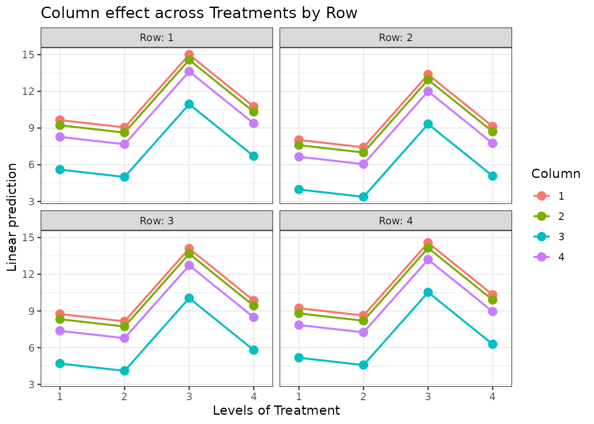
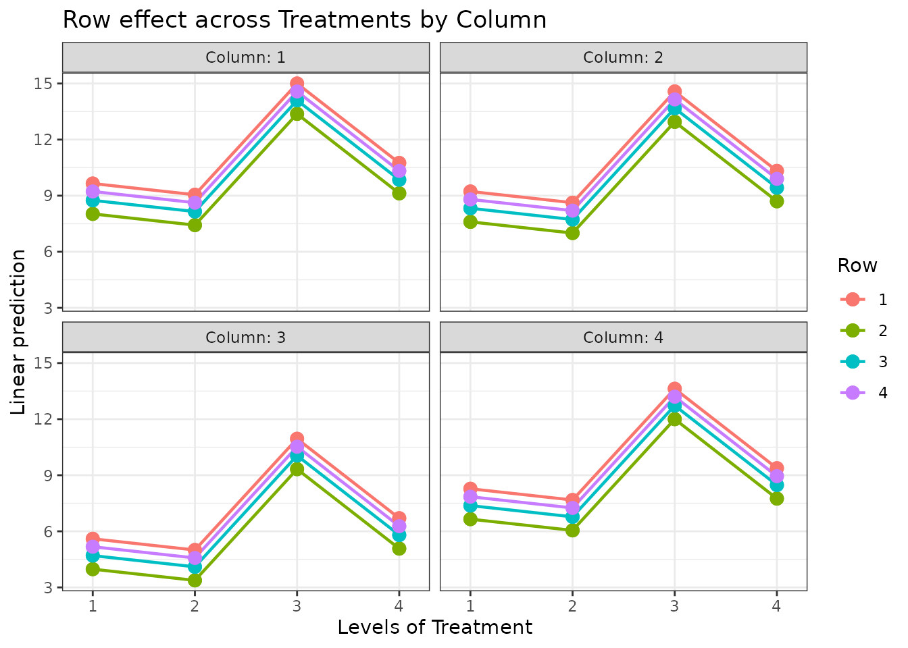

When to Use
The Latin Square Design (LSD) extends the RCBD by controlling for two sources of variability simultaneously. Use it when:
- You have one treatment factor of interest.
- There are two blocking factors (e.g., rows and columns in a field, days and operators in a lab).
- The number of treatments equals the number of levels in each blocking factor (producing a square layout).
The Design
Each treatment appears exactly once in every row and every column. The model is:
where is the row effect, is the column effect, and is the treatment effect.
Data
We use a 4x4 Latin square dataset with four treatments, four rows, and four columns.
library(agrideshr)
data(lsd_data)
str(lsd_data)
#> Classes 'tbl_df', 'tbl' and 'data.frame': 16 obs. of 4 variables:
#> $ Row : Factor w/ 4 levels "1","2","3","4": 1 2 3 4 1 2 3 4 1 2 ...
#> $ Column : Factor w/ 4 levels "1","2","3","4": 1 4 3 2 2 1 4 3 3 2 ...
#> $ Treatment: Factor w/ 4 levels "1","2","3","4": 1 1 1 1 2 2 2 2 3 3 ...
#> $ Yield : num 8.7 7.3 5.1 8.7 9.2 7.5 6.7 4 11.6 12.7 ...
lsd_data
#> Row Column Treatment Yield
#> 1 1 1 1 8.7
#> 2 2 4 1 7.3
#> 3 3 3 1 5.1
#> 4 4 2 1 8.7
#> 5 1 2 2 9.2
#> 6 2 1 2 7.5
#> 7 3 4 2 6.7
#> 8 4 3 2 4.0
#> 9 1 3 3 11.6
#> 10 2 2 3 12.7
#> 11 3 1 3 14.0
#> 12 4 4 3 12.9
#> 13 1 4 4 9.1
#> 14 2 3 4 4.6
#> 15 3 2 4 9.2
#> 16 4 1 4 11.3Exploratory Visualization
library(ggplot2)
ggplot(lsd_data, aes(x = Treatment, y = Yield, colour = Row, shape = Column)) +
geom_point(size = 3) +
ylim(0, NA) +
theme_bw() +
labs(title = "Yield by Treatment (Row and Column indicated)")
Model Fitting
Both row and column effects are included in the model:
mod <- aov(Yield ~ Row + Column + Treatment, data = lsd_data)
summary(mod)
#> Df Sum Sq Mean Sq F value Pr(>F)
#> Row 3 5.82 1.941 2.872 0.125712
#> Column 3 39.67 13.224 19.567 0.001683 **
#> Treatment 3 86.55 28.849 42.687 0.000193 ***
#> Residuals 6 4.06 0.676
#> ---
#> Signif. codes: 0 '***' 0.001 '**' 0.01 '*' 0.05 '.' 0.1 ' ' 1The F-test for Treatment assesses treatment differences
after removing row and column variability.
Post-hoc Comparisons
We compare treatments only (rows and columns are nuisance factors):
TukeyHSD(mod, which = "Treatment")
#> Tukey multiple comparisons of means
#> 95% family-wise confidence level
#>
#> Fit: aov(formula = Yield ~ Row + Column + Treatment, data = lsd_data)
#>
#> $Treatment
#> diff lwr upr p adj
#> 2-1 -0.60 -2.6123136 1.412314 0.7386088
#> 3-1 5.35 3.3376864 7.362314 0.0003869
#> 4-1 1.10 -0.9123136 3.112314 0.3224865
#> 3-2 5.95 3.9376864 7.962314 0.0002124
#> 4-2 1.70 -0.3123136 3.712314 0.0941779
#> 4-3 -4.25 -6.2623136 -2.237686 0.0013761
Estimated Marginal Means
library(emmeans)
emm <- emmeans(mod, specs = "Treatment")
emm
#> Treatment emmean SE df lower.CL upper.CL
#> 1 7.45 0.411 6 6.44 8.46
#> 2 6.85 0.411 6 5.84 7.86
#> 3 12.80 0.411 6 11.79 13.81
#> 4 8.55 0.411 6 7.54 9.56
#>
#> Results are averaged over the levels of: Row, Column
#> Confidence level used: 0.95
pairs(emm)
#> contrast estimate SE df t.ratio p.value
#> Treatment1 - Treatment2 0.60 0.581 6 1.032 0.7386
#> Treatment1 - Treatment3 -5.35 0.581 6 -9.203 0.0004
#> Treatment1 - Treatment4 -1.10 0.581 6 -1.892 0.3225
#> Treatment2 - Treatment3 -5.95 0.581 6 -10.236 0.0002
#> Treatment2 - Treatment4 -1.70 0.581 6 -2.924 0.0942
#> Treatment3 - Treatment4 4.25 0.581 6 7.311 0.0014
#>
#> Results are averaged over the levels of: Row, Column
#> P value adjustment: tukey method for comparing a family of 4 estimates
Interaction Plots
Visualise treatment effects across rows and columns:
emmip(mod, Column ~ Treatment | Row) +
theme_bw() +
labs(title = "Column effect across Treatments by Row")
emmip(mod, Row ~ Treatment | Column) +
theme_bw() +
labs(title = "Row effect across Treatments by Column")
Conclusion
The Latin Square Design controls for two sources of heterogeneity simultaneously, making it highly efficient when the experimental layout naturally forms a grid. Limitations include:
- The number of treatments must equal the number of row and column levels.
- No interaction terms can be estimated (df are used for blocking).
When you need to study two treatment factors and their interaction, consider a Factorial Design.